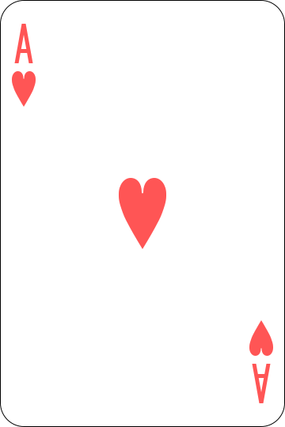
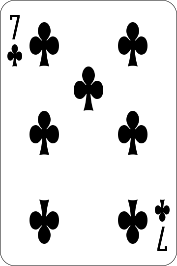
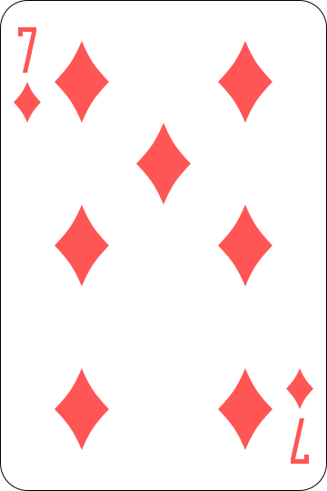
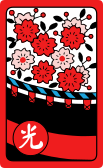
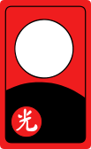
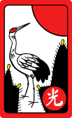
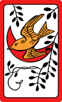
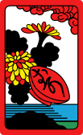
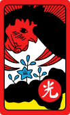
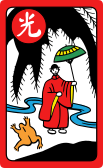

포커


텍사스 홀덤
개인 카드 2장과 공개 카드 5장으로 최고의 다섯 장을 만든다. 컴퓨터 상대 3명과 대결.
포커


세븐 포커
일곱 장을 받아 그중 다섯 장으로 겨룬다. 마운틴과 백스트레이트가 있는 우리식 족보.
화투


두 장 섯다
화투 두 장으로 끝내는 한판 승부. 광땡부터 망통까지, 암행어사와 땡잡이도 그대로.
화투



세 장 섯다
세 장을 받아 두 장을 골라 낸다. 무엇을 버릴지가 승부를 가른다.
화투


맞고 (고스톱)
화투 마흔여덟 장으로 벌이는 일대일 승부. 광 · 띠 · 열끗 · 피를 모아 삼 점을 먼저.